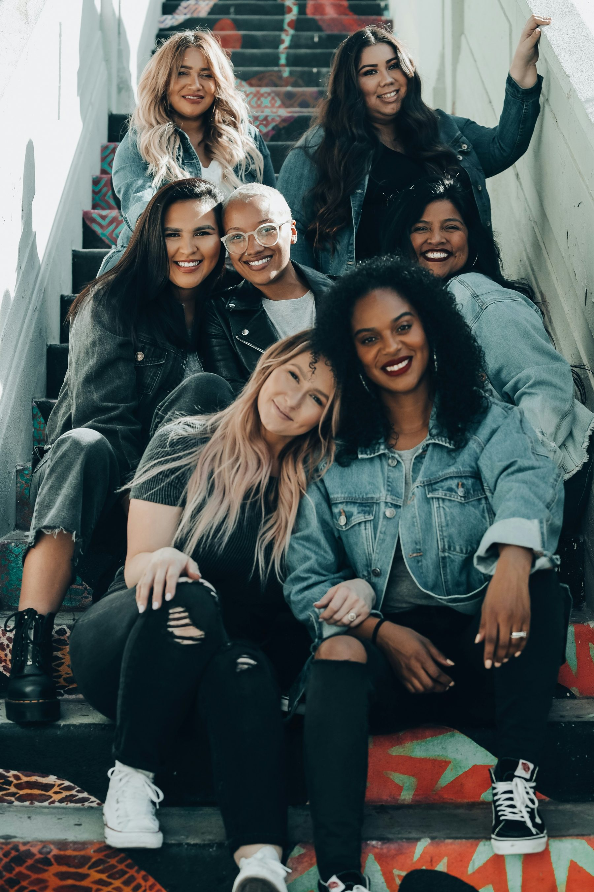

Your emerging leaders and underrepresented employees have the ambition. What they often lack is access: to coaching, to mentorship, to the kind of guidance that turns potential into promotion.

Future Leaders Movement partners with companies, nonprofits, and foundations to expand coaching access, whether that means sponsoring stipends for your own people or supporting our work more broadly.
Whether you're a company sponsoring coaching for your team, a nonprofit extending support to your members, or a foundation funding access more broadly, we'll build a structure around your goals and budget.
Interested in partnering? Reach out.